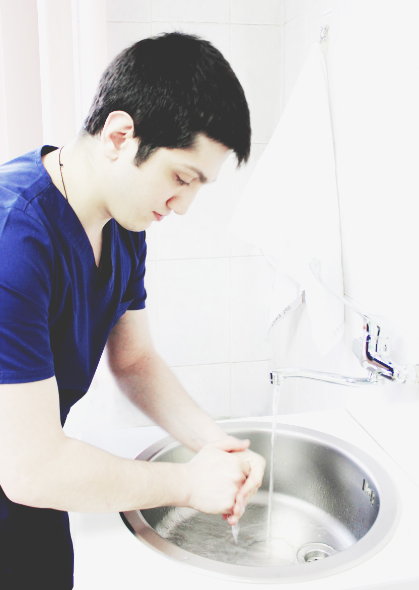

Обо мне
- Учеба:
В период 2000-2003г. выполнил научную работу "Изучение гемодинамических показателей организма человека во время исследовательской экспедиции по горному Крыму, их взаимосвязь с факторами внешней среды, атмосферным давлением и температурой воздуха" - 2004-2011г. - проходил обучение в Российском национальном исследовательском медицинском университете им. Н.И.Пирогова на лечебном факультете по специальности "лечебное дело" с дневной/очной формой обучения.
- 2011-2013г. - проходил ординатуру по специальности "урология" в клинике урологии мгсму на базе ГКБ №50, г.Москва
- В ноябре 2011г. был участником Конгресса секкции Андрологической урологии (ESAU) Европейской ассоциации урологов (EAU), где прослушал секционный курс.
- 19.02.15 Международная школа постдипломного образования по мужскому здоровью PRISM.
- Профессиональная переподготовка в УЗД (ФГБУ ГНЦ ФМБЦ им. А.И.Бурназяна ФМБА России) - 2015г.
- С января по октябрь 2008г. выполнял функции операционного медбрата российского Национального медико-хирургического центра им. Н.И.Пирогова.
- С января по сентябрь 2008г. работал лаборантом на кафедре оперативной хирургии и топографической анатомии РГМУ им. Н.И.Пирогова.
- C 24.10.2013г. и по нынешний день работает как врач уролог в ГП №5, а также в клинике Александра-Мед.